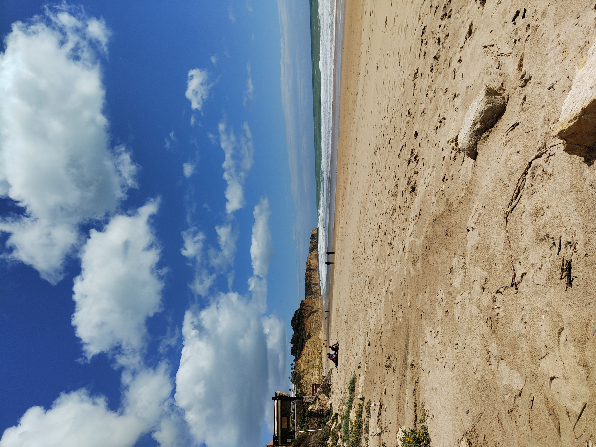
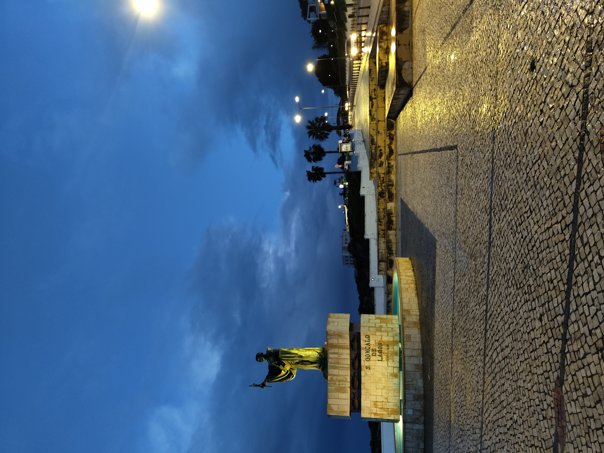
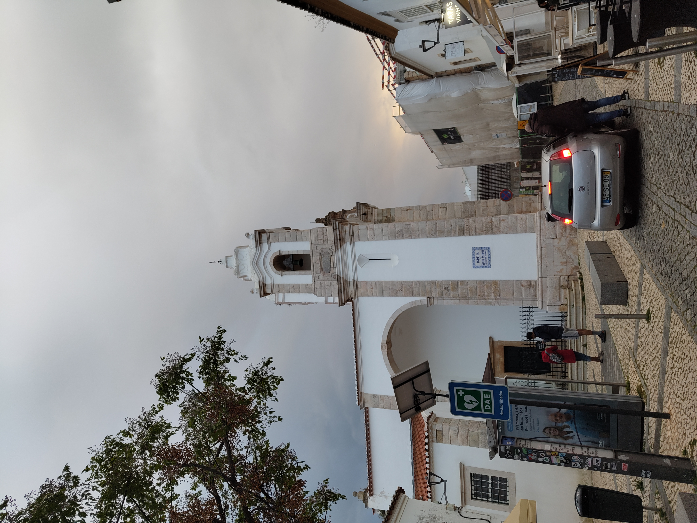
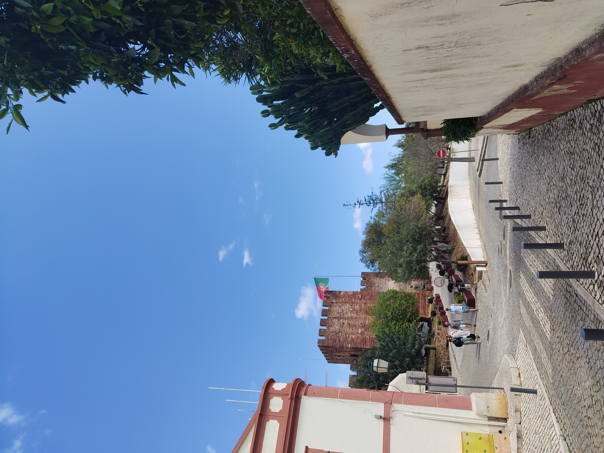

Algarve & Andalusia
Lagos · Silves · Faro · Albufeira · Cádiz · Gibraltar · Málaga · Granada
🍊 Travel
Oranges, Cliffs, and the Rock
Two trips along the southern edge of Europe
Lagos — The Coastline That Earns Every Photo
Lagos is the kind of place that makes you understand why people move somewhere rather than just visit. The beaches are beautiful, the old town is full of history and charm, and the coastline is some of the most dramatic in Europe — golden limestone cliffs dropping into the Atlantic, sea caves and arches worn through the rock over thousands of years, the ocean a deep blue-green that shifts colour depending on the light.
The walks along the coast path are the point. Every few hundred metres brings a new angle on a new formation, and the whole thing has the quality of scenery that looks better the more you slow down. The oranges everywhere are a detail that ends up becoming part of the memory of the place — on trees, in markets, in everything. Lagos has a lot of history in a small footprint and rewards an extra day.

Lagos — the beach that makes the drive worth it before you’ve even walked down to it.


The Atlantic on the coast path — the waves arriving from a long way off.


Silves — The Castle in the Hills
Silves is a short drive inland and worth it. The castle sits above the town on a hill and has been there, in various forms, since the Moorish occupation — the red sandstone walls and towers are in good condition and the views over the surrounding countryside are excellent. The cathedral below it is similarly well-preserved. It is a small town with a lot of charm and no particular hurry about itself, which is exactly the right pace for an afternoon.


Back to top